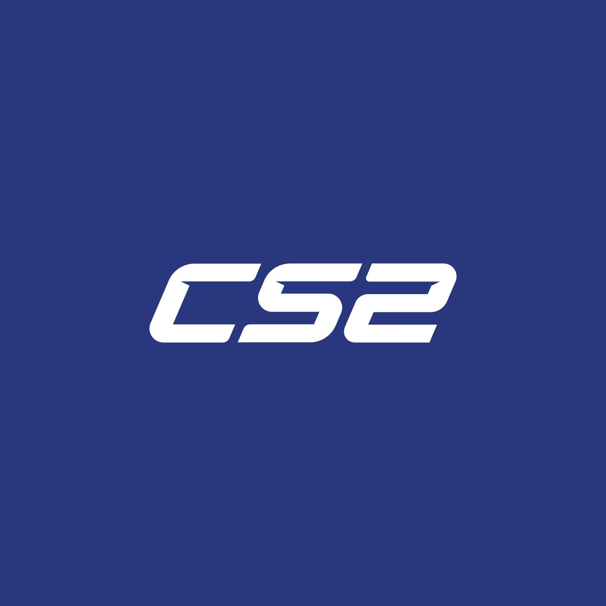

Counter-Strike 2
- Developer: Valve
- Release Year: 2023
- Genre: First-Person Shooter
- Release Date: September 2023
About: Counter-Strike 2 is the next evolution of the legendary CS:GO, rebuilt with the new Source 2 engine. It features improved graphics, realistic smoke behavior, better audio, and updated maps. The core gameplay stays true to its competitive roots, but with technical enhancements for a modern experience.
Fun Facts: 1. Smoke grenades now react to bullets and explosions. 2. Matchmaking uses a new rating system called “Premier Mode.” 3. CS2 replaces CS:GO — it's not a separate game.
🔗 Steam (Free)
← Back to Home